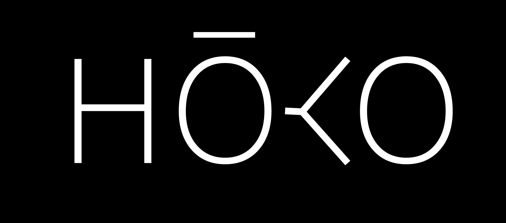

Hoko, la piqûre quotidienne de culture
Parce que pour nous, la culture c'est pas de la confiture !
Chez Hoko, la culture c'est notre drogue dure !
Musique, streetart, expo, littérature...
Retrouve les chroniqueuse Hoko pour ta dos quotidienne de culture !

Les coulisses de ta radio
Lance direct en vidéo, Vis nos backstages du quotidien !
Intéragis avec nous sur nos réseaux
& get your Hoko dose !
Tu as raté notre dernière émission ? Le sujet de notre dernière interview ? Pas de soucis, récupère les podcasts de os dernières interventions !
Nous le savons, vous êtes aussi accro à la culture que notre team !
Prends partie, envoie-nous tes sujets ! Tu as enregistré un podcast et souhaites être entendu ?
Nous nous engageons à écouter chacun des enregistrements qui nous seront envoyés, et à en diffuser un par semaine sur notre radio !
Fais tourner ta culture !